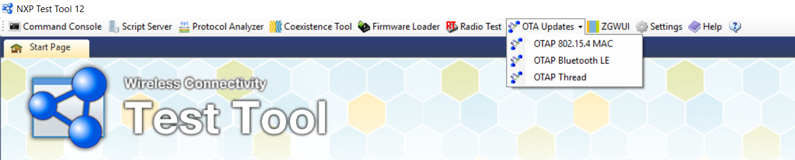
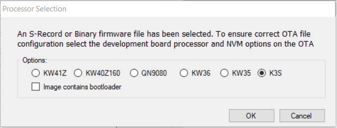
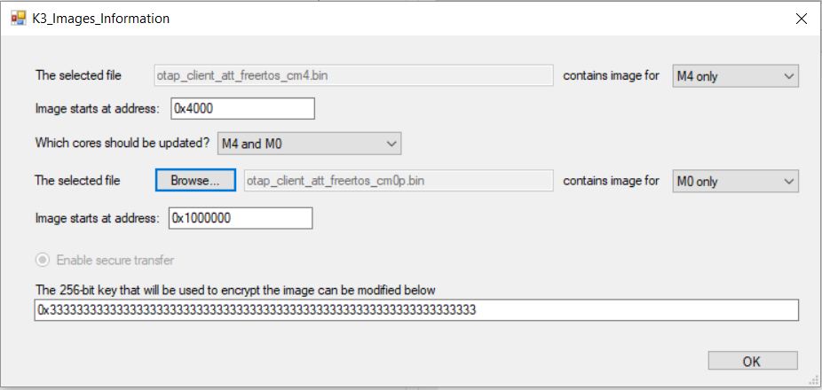
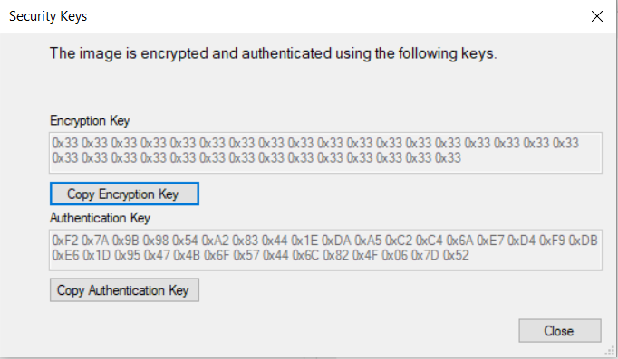
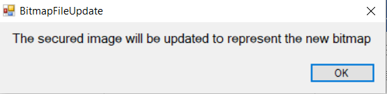
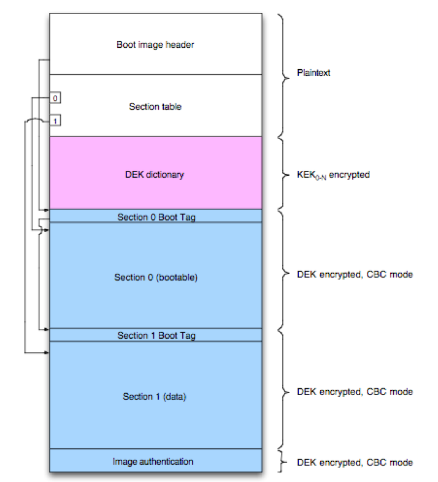

- Start the Test Tool application and go to OTA Updates > OTAP Bluetooth LE.
Figure 1. Test Tool application

- Click the Browse button and select an image file. Select K3S in the Processor
Selection dialogue.
Figure 2. Processor selection

- Choose from the dropdown menu on the right side whether the file you selected
contains both M4 and M0+ images, i.e. it has been generated by MCUXpresso IDE, or
only the M4/M0+ image, i.e. it has been generated by IAR EW. The start address is
the default one for the provided OTAP demos. If you have changed the project linker
layout, pick the correct start address for the image.
- Select which core images should be updated. If the initial selected image contains
only the M4 or only the M0+ image but the user wants to update both, a second Browse
button appears, and the user must select the second image file. As in the previous
step, the start address is the default one. In this example screenshot, a .bin file
containing the M4 image file has been selected, but the user wishes to update both
core images, therefore they must also select the file containing only the M0+ image.
Figure 3. K32W032 image information

- Only secured OTAP is supported for K32W032. The user can overwrite
the 256-bit SBKEK (Secured Boot Key Encryption Key) used to encrypt the image. The
key is secret and must be shared with the client board which decrypts the image. The
way to share the key is left to the user. In the demos provided, the key is
hardcoded in Test Tool and in the application residing on the client board. After
the client application has received the image, it will write the pre-shared SBKEK at
a known location in flash where it is read by the bootloader after reset.
- Click OK. The user is prompted to save the resulting encrypted and
signed image, with a .sbin extension. After saving, a dialog box appears with the
SBKEK used to encrypt the image and the RHK (Root Hash Key), which is an SHA-256
hash of the RSA public key for the certificate used to sign the image. As noted in
step 5, the SBKEK must be shared with the client in a secured way. The RHK is public
and is sent over-the-air as part of the OTAP process. It is also not modifiable by
the user since it depends on the certificate.
Figure 4. Security keys

Note: If the user wants to use their own certificate, they must
overwrite the certificate used by Test Tool, specifically the files named
cert0_noca.der.crt (root certificate) and private.pem (RSA private key) located
in Secured/config inside the folder where Test Tool is installed.
- The sector bitmap field in the OTAP Bluetooth LE view is used to
determine which sectors is erased on the client board before writing the new image.
By default, the entire useful flash is erased. The bitmap looks like
this:
0xFFFFFFFFFFFFFFFFFFFFFFFFFFFFFFFFFFFFFFFFFFFFFFFFFFFFFFFFFFFFFFFFFFFFFFFFFFFFFFFFFFFFFFFFFFFFFFE0
The
bold bytes above represent the Non-Volatile Memory space in M0+’s flash (8 sectors *
2K for each sector = 16K of NVM). To avoid the NVM being erased, after the secured
image has been created the user can change FF to 00. The secured image is recreated
– the NVM is not erased on the client board. This dialog box appears.Figure 5. Bitmap file update

Secured image format
After the image files have been selected and the user clicks OK to generate the .sbin,
Test Tool will create the secured image in the background using calls to the elftosb
executable. For full documentation see the Kinetis elftosb User’s Guide. The following
figure shows an overview of the .sbin file:
Figure 6. Secured image format
The .sbin file will begin with two plaintext sections, the boot image header
and the section table. The DEK dictionary contains one or more randomly generated keys
used to encrypt the useful data. These keys are wrapped by the SBKEK chosen by the user
as per RFC 3394. Encrypted sections follow, and the image authentication code is at the
end. The only information needed by the bootloader on the client board to successfully
authenticate and decrypt the image is the two keys: SBKEK for decryption, RHK for
authentication.